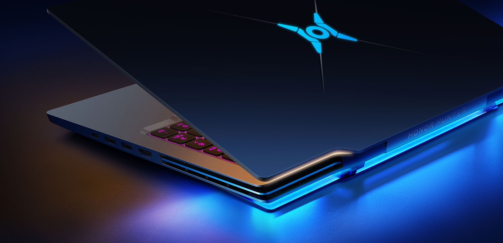
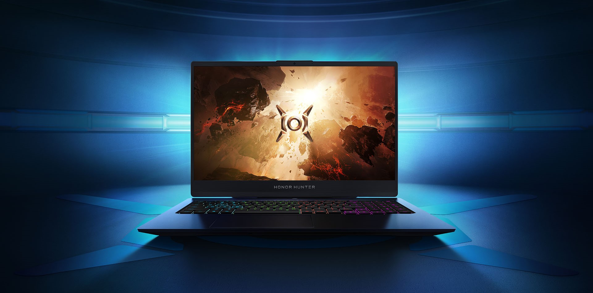
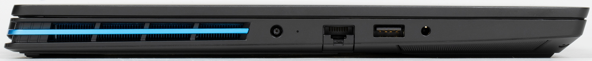
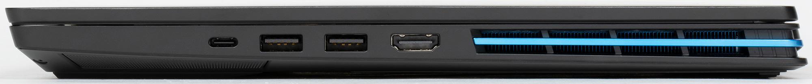

Компания Honor называет дизайн ноутбука дерзким, хотя, на мой взгляд, Hunter V700 просто выполнен в лучших традициях игровых ноутбуков и каким-то иным дизайном обладать не должен. Выполненный из алюминиевого сплава корпус окрашен в лаконичный черный цвет.
Сам же ноутбук выглядит, если позволите, шикарно. Сплошной черный матовый корпус, который переливается на свету, создает впечатление монолитной конструкции. Чисто визуально - это очень приятное для глаза устройство. Оно выглядит дорого, статусно и, очевидно, будет привлекать внимание. Но не вычурными и кричащими элементами, а собранным и внушительным исполнением. В этом смысле, после отключения всех подсветок, перед вами, скорее, окажется строгий деловой девайс, нежели увеселительная платформа для игр. Такая тенденция в дизайне подобных устройств очень радует. Это хорошо, что Honor понимает запросы аудитории и принимает тот факт, что игры далеко не всегда о броском дизайне.
 Из выделяющихся деталей, подчеркивающих принадлежность ноутбука к «геймерскому» ряду, отметим логотип на крышке корпуса с подсветкой и подсвечиваемую заднюю часть корпуса, которая приподнимается при открытии экрана. Благодаря этим дизайнерским решениям, Honor Hunter V700 выглядит очень необычно и обращает на себя внимание. Поверхность панелей корпуса нельзя назвать стойкой к отпечаткам пальцев, они остаются при каждом касании и убираются потом не так-то просто. Добавим, что толщина ноутбука составляет 20 мм, что для игровой модели очень даже неплохо, и что весит он чуть меньше 2,3 кг. Пластиковое основание корпуса начисто лишено каких-либо вентиляционных отверстий, но это вовсе не означает, что с охлаждением у Hunter V700 дела обстоят плохо. Подробнее об этом я расскажу чуть позже. Зато такая глухая панель позволит использовать ноутбук на любых поверхностях без опасения, что он забьется пылью или перегреется.
Резиновые ножки по углам передней части основания корпуса и по его задней кромке придают ноутбуку устойчивость на ровной поверхности. Рядом с угловыми ножками выделим сетки аудиодинамиков. Угол открытия дисплея составляет примерно 145 градусов. Передний торец корпуса не несет на себе никаких разъемов или индикаторов. Отметить можно только небольшую выемку по его центру для более удобного открытия дисплея, но придется придерживать основание, иначе верхнюю панель не поднять. Сзади видны прорези системы вентиляции с полосками светодиодной подсветки и надпись Honor Hunter.
Такие же прорези есть и на обеих боковых сторонах корпуса, а рядом с ними выведены интерфейсные разъемы.
Среди последних выделим коннектор питания с индикатором, гигабитную сетевую розетку RJ45, порт USB 2.0, комбинированный аудиоразъем для наушников или микрофона, порт USB 3.2 Gen1 Type-C, два порта USB 3.2 Gen1 Type-A и видеовыход HDMI 2.0.
Кнопка включения ноутбука расположена в центре панели, расположенной за функциональными клавишами. В нее встроен сканер отпечатка пальца.